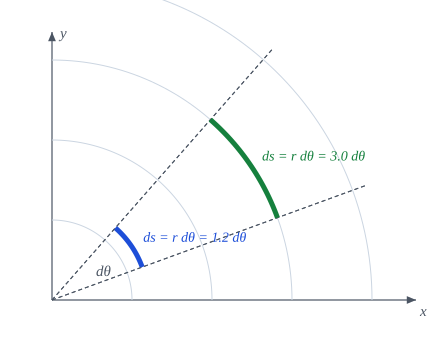
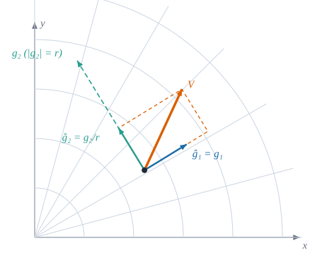

Medir longitudes, ángulos y áreas en coordenadas curvilíneas
NotaObjetivos de aprendizaje
Al terminar el capítulo sabrás:
escribir el elemento de línea \(ds^2=g_{ij}\,d\theta^i d\theta^j\) y usarlo para calcular longitudes de curva;
obtener ángulos entre vectores y áreas y volúmenes a partir de la métrica;
calcular la métrica de las coordenadas cilíndricas y esféricas;
definir las componentes físicas de un vector en una base ortogonal y explicar por qué tienen las unidades «correctas»;
verificar numéricamente cada fórmula con Geometria.
4.1 Motivación
Las coordenadas curvilíneas se eligen por comodidad geométrica, pero ya no son longitudes: \(\theta\) en polares es un ángulo, no una distancia. Para volver a medir distancias hace falta un «factor de conversión» en cada punto. Ese factor es el tensor métrico, y el capítulo 3 ya lo construyó a partir de los vectores de la base. Aquí lo usamos para medir.
ImportanteIdea clave
Toda la geometría intrínseca de una superficie (longitudes, ángulos, áreas) se deduce de las componentes \(g_{ij}\). Dos sistemas de coordenadas distintos tienen \(g_{ij}\) distintos, pero los resultados geométricos coinciden.
4.2 Longitud, ángulo y área
Definición 4.1 (Elemento de línea) Si \(\mathbf{r}(\theta^1,\dots,\theta^n)\) es el vector de posición, un desplazamiento infinitesimal es \(d\mathbf{r}=\mathbf{g}_i\,d\theta^i\), y el cuadrado de su longitud es \[
ds^2=d\mathbf{r}\cdot d\mathbf{r}=g_{ij}\,d\theta^i\,d\theta^j .
\tag{4.1}\]
Proposición 4.1 (Longitud, ángulo y área)
Longitud de una curva\(\theta^i=\theta^i(t)\), \(t\in[a,b]\): \[
L=\int_a^b\sqrt{g_{ij}\,\dot\theta^i\dot\theta^j}\;dt .
\tag{4.2}\]
Ángulo\(\varphi\) entre dos vectores \(\mathbf{V},\mathbf{W}\): \[
\cos\varphi=\frac{g_{ij}V^iW^j}{\sqrt{g_{kl}V^kV^l}\,\sqrt{g_{mn}W^mW^n}} .
\tag{4.3}\]
Área del paralelogramo de lados \(\mathbf{g}_1\,d\theta^1\) y \(\mathbf{g}_2\,d\theta^2\) (\(n=2\)): \[
dA=\sqrt{\det(g_{ij})}\;d\theta^1d\theta^2 .
\tag{4.4}\]
Sobre la curva, \(d\mathbf{r}=\mathbf{g}_i\dot\theta^i\,dt\), luego \(\|d\mathbf{r}\|=\sqrt{g_{ij}\dot\theta^i\dot\theta^j}\,dt\) y se integra. (2) \(\mathbf{V}\cdot\mathbf{W}=g_{ij}V^iW^j\) y las normas son \(\sqrt{\mathbf{V}\cdot\mathbf{V}}\), \(\sqrt{\mathbf{W}\cdot\mathbf{W}}\) por el capítulo 3. (3) Si \(B\) es la matriz de columnas \(\mathbf{g}_1,\mathbf{g}_2\), el área del paralelogramo es \(\sqrt{\det(B^{\mathsf T}B)}=\sqrt{\det g}\) (determinante de Gram); en el plano, \(\sqrt{\det g}=|\det B|\), el valor absoluto del jacobiano. \(\blacksquare\)
Proposición 4.2 (Determinante de la métrica y jacobiano) Si \(B\) es la matriz cuadrada de columnas \(\mathbf{g}_i\), entonces \(\det(g_{ij})=(\det B)^2\) y el elemento de volumen es \[
dV=\sqrt{\det(g_{ij})}\;d\theta^1\cdots d\theta^n .
\tag{4.5}\]
Es el mismo factor \(|j|\) del ecuación 2.4: \(\sqrt g\) es el jacobiano del paso de las coordenadas curvilíneas a las cartesianas. La demostración es la del ejercicio 1 del capítulo 3.

Figura 4.1: En polares, \(g_{22}=r^2\): el mismo incremento \(d\theta\) recorre un arco \(r\,d\theta\), mayor cuanto mayor es \(r\). El elemento de área es \(\sqrt{g}\,dr\,d\theta=r\,dr\,d\theta\) (recuérdese la Figura 2.3).
4.3 Métricas habituales
TipEjemplo: cilíndricas y esféricas
analítico Con \(\mathbf{r}=(\rho\cos\varphi,\rho\sin\varphi,z)\) se tiene \(\mathbf{g}_1=(\cos\varphi,\sin\varphi,0)\), \(\mathbf{g}_2=\rho(-\sin\varphi,\cos\varphi,0)\) y \(\mathbf{g}_3=(0,0,1)\), de donde \[
ds^2=d\rho^2+\rho^2\,d\varphi^2+dz^2,\qquad \sqrt g=\rho .
\] En esféricas \((r,\theta,\varphi)\), con \(\theta\) la colatitud, \[
ds^2=dr^2+r^2\,d\theta^2+r^2\sin^2\theta\,d\varphi^2,\qquad \sqrt g=r^2\sin\theta .
\tag{4.6}\]
Las tres métricas (polares, cilíndricas, esféricas) son diagonales: las bases son ortogonales. Es el caso más común en las aplicaciones y el único en el que las componentes físicas se definen sin ambigüedad.
4.4 Componentes físicas
Las componentes contravariantes \(V^i\) no tienen en general las dimensiones del vector. En polares, \(V^\theta\) se mide en rad/s si \(\mathbf{V}\) es una velocidad, y no en m/s. Para recuperar unidades físicas se normaliza la base.
Definición 4.2 (Componentes físicas (base ortogonal)) Sea \(\{\mathbf{g}_i\}\) una base ortogonal, con vectores unitarios \(\hat{\mathbf{g}}_i=\mathbf{g}_i/\sqrt{g_{ii}}\) (sin suma). Las componentes físicas\(V^{(i)}\) de \(\mathbf{V}\) son sus coordenadas en la base normalizada: \[
\mathbf{V}=V^{(i)}\,\hat{\mathbf{g}}_i,\qquad V^{(i)}=\sqrt{g_{ii}}\;V^i=\frac{V_i}{\sqrt{g_{ii}}}\quad\text{(sin suma)} .
\tag{4.7}\]

Figura 4.2: Componentes físicas en polares. Con \(\hat{\mathbf{g}}_1=\mathbf{g}_1\) y \(\hat{\mathbf{g}}_2=\mathbf{g}_2/r\), el vector \(\mathbf{V}\) se descompone en \(V^{(1)}\hat{\mathbf{g}}_1+V^{(2)}\hat{\mathbf{g}}_2\) (paralelogramo ámbar). El vector \(\mathbf{g}_2\) (verde discontinuo) mide \(r\), de modo que \(V^2=V^{(2)}/r\).
Proposición 4.3 (Propiedades de las componentes físicas) En una base ortogonal,
\(\|\mathbf{V}\|^2=\sum_i\bigl(V^{(i)}\bigr)^2\);
\(V^{(i)}=\mathbf{V}\cdot\hat{\mathbf{g}}_i\) (proyección sobre el vector unitario);
\(V^{(i)}\) tiene las mismas unidades que \(\mathbf{V}\).
Por la ortogonalidad, \(g_{ij}=0\) si \(i\ne j\), de modo que \(\|\mathbf{V}\|^2=g_{ii}(V^i)^2=\bigl(\sqrt{g_{ii}}V^i\bigr)^2=\sum_i(V^{(i)})^2\). Además \(\mathbf{V}\cdot\hat{\mathbf{g}}_i=V_i/\sqrt{g_{ii}}=\sqrt{g_{ii}}\,V^i\), porque \(V_i=g_{ii}V^i\). Para las unidades: \(\hat{\mathbf{g}}_i\) es adimensional, luego \(V^{(i)}\) comparte las unidades de \(\mathbf{V}\). \(\blacksquare\)
AdvertenciaConvenio: solo bases ortogonales
Para una base no ortogonal existen varias definiciones razonables de «componentes físicas» (por ejemplo, proyectar sobre \(\hat{\mathbf{g}}_i\) o descomponer sobre \(\hat{\mathbf{g}}_i\) no dan lo mismo). En este libro la Definición 4.2 se usa solo con bases ortogonales. El convenio para láminas, donde la base no siempre lo es, está pendiente de confirmar en el apéndice de notación (Sección A.1).
La tabla recoge la relación entre las componentes de \(\mathbf{V}\) en polares, cuando \(\mathbf{V}\) es una velocidad:
Componente
Símbolo
Unidades
Relación
contravariante radial
\(V^1=\dot r\)
m/s
\(V^{(1)}=V^1\)
contravariante angular
\(V^2=\dot\theta\)
rad/s
\(V^{(2)}=r\,V^2\)
física radial
\(V^{(1)}\)
m/s
\(\hat{\mathbf{g}}_1\)
física angular
\(V^{(2)}=r\dot\theta\)
m/s
\(\hat{\mathbf{g}}_2=\mathbf{g}_2/r\)
4.5 Ejemplo computacional en Julia
TipEjemplo computacional
calculado Longitud de la espiral \(r=\theta/\pi\), con \(\theta\in[0,4\pi]\), mediante ecuación 4.2, y comprobación de componentes físicas.
usingGeometria, LinearAlgebra# Longitud de la espiral de Arquímedes r(θ) = θ/π, θ ∈ [0, 4π], por la regla del trapeciofunctionlongitud(curva, dcurva, a, b; n =20_000) t =range(a, b; length = n +1) h = (b - a) / nintegrando(s) =begin θ =curva(s); d =dcurva(s) B =base_polar(θ[1], θ[2])sqrt(d'*metrica(B) * d)end h * (sum(integrando.(t)) - (integrando(a) +integrando(b)) /2)endcurva(s) = [s /π, s] # (r, θ)dcurva(s) = [1/π, 1.0]L =longitud(curva, dcurva, 0.0, 4π)# Valor exacto: ∫₀^{4π} √(1/π² + s²/π²) ds = (1/π) ∫ √(1+s²) dsexacta = (1/π) * ((4π *sqrt(1+ (4π)^2)) /2+asinh(4π) /2)(numerica = L, exacta = exacta, error =abs(L - exacta))
Demuestra ecuación 4.6 a partir de \(\mathbf{r}=r(\sin\theta\cos\varphi,\sin\theta\sin\varphi,\cos\theta)\).
Calcula el área de una esfera de radio \(R\) integrando \(\sqrt{\det g}\) sobre las coordenadas \((\theta,\varphi)\) con \(r=R\) fijo.
En polares, ¿qué ángulo forman en \((r,\theta)=(2,0.5)\) los vectores con componentes contravariantes \((1,0)\) y \((0,1)\)? Compruébalo con ecuación 4.3.
Usa comps_fisicas para una velocidad \(\mathbf{V}=(1,0)\) cartesiana en el punto \((r,\theta)\): ¿cuánto valen \(V^{(1)}\) y \(V^{(2)}\)?